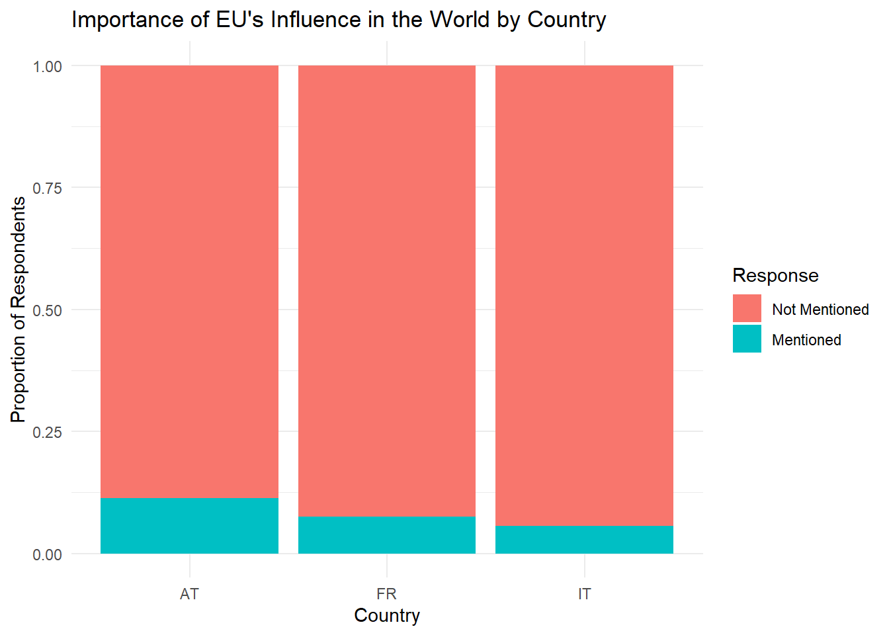
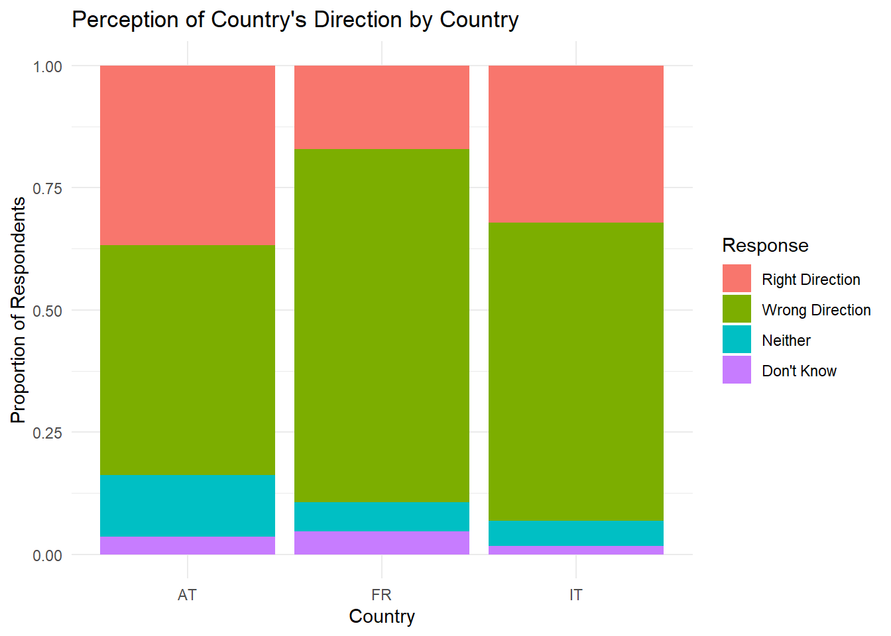

── Attaching core tidyverse packages ──────────────────────── tidyverse 2.0.0 ──
✔ dplyr 1.1.4 ✔ readr 2.1.5
✔ forcats 1.0.0 ✔ stringr 1.5.1
✔ ggplot2 3.5.1 ✔ tibble 3.2.1
✔ lubridate 1.9.3 ✔ tidyr 1.3.1
✔ purrr 1.0.2
── Conflicts ────────────────────────────────────────── tidyverse_conflicts() ──
✖ dplyr::filter() masks stats::filter()
✖ dplyr::lag() masks stats::lag()
ℹ Use the conflicted package (<http://conflicted.r-lib.org/>) to force all conflicts to become errorsAntash Assignment 7
#| echo: false
# A tibble: 6 × 5
isocntry d73_1 qa5_7 d73_1L qa5_7L
<chr> <dbl+lbl> <dbl+lbl> <fct> <fct>
1 AL 1 [Things are going in the right direction] 0 [Not men… Thing… Not m…
2 AL 1 [Things are going in the right direction] 0 [Not men… Thing… Not m…
3 AL 2 [Things are going in the wrong direction] 0 [Not men… Thing… Not m…
4 AL 2 [Things are going in the wrong direction] 0 [Not men… Thing… Not m…
5 AL 1 [Things are going in the right direction] 0 [Not men… Thing… Not m…
6 AL 1 [Things are going in the right direction] 1 [The EU'… Thing… The E…[1] "Not mentioned" "The EU's influence in the world"[1] "Things are going in the right direction"
[2] "Things are going in the wrong direction"
[3] "Neither the one nor the other (SPONTANEOUS)"
[4] "Don't know (SPONT.)" qa5_7_factor
Not mentioned The EU's influence in the world
32213 3362 d73_2_factor
Things are going in the right direction
13240
Things are going in the wrong direction
15845
Neither the one nor the other (SPONTANEOUS)
2908
Don't know (SPONT.)
3582 
This graph looks at the EB dataset’s qa5_7 variable, which respondents consider “The EU’s influence in the world” as one of the most important issues facing the European Union. It is a categorical variable with two primary responses: Mentioned or Not Mentioned.
The bar graph for qa5_7 displays the proportion of respondents in Austria (AT), Italy (IT), and France (FR) who mentioned or did not mention the EU’s influence as an essential issue. This visualization highlights differences in perceptions across these countries regarding the EU’s role on the global stage.
For further analysis of this variable, I would compare proportions across the countries, possibly choosing some other nations to provide a larger context. Furthermore, exploring any underlying factors as to why the countries have “high” or “low” percentages of respondents mentioning this issue would be interesting. Many factors are at play, though it is essential not to do that on this graph, as all three look relatively small. Still, “The EU’s influence in the world” was only one of many options for them, leading to fewer people not mentioning it. To improve this graph, I would get a better idea of what data to include to solve the issue of the graph being deceiving at first glance. This would require me to decide how to handle the other issues mentioned and the “Don’t Know” responses.

The second variable, d73_1, captures respondents’ perceptions of the overall direction their country is heading. It includes the following response categories:
Right Direction: The respondent feels things are going well in their country.
Wrong Direction: The respondent believes that things are not going well.
Neither: The respondent feels that things are neither good nor bad.
Don’t Know: The respondent is still determining the direction.
The corresponding bar graph illustrates the distribution of these perceptions among respondents in the same three countries. This allows for a comparative analysis of national sentiment.
Further analysis of this variable involves determining the overall positivity or negativity of the respondents and trying to understand how individuals made this decision. Once again, it is vital to incorporate more nations to get a broader idea of the responses. Incorporating more nations may also expose some other conditions responsible for the differences, such as economics or political climate. Finally, In this graph, deciding whether to keep the neutral or uncertain responses based on the target audience and message is crucial. If these responses are left out, it paints a clear black-and-white picture of the public view; however, it leaves out data.
| d73_1L | Not Mentioned | Mentioned |
|---|---|---|
| Right Direction (Country) | 9944 | 1160 |
| Wrong Direction (Country) | 18551 | 1842 |
| Neither (Country) | 2147 | 235 |
| Don’t know (Country) | 1571 | 125 |